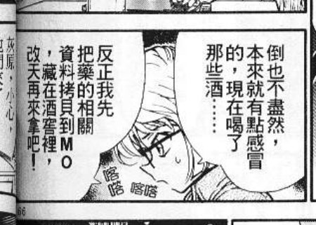
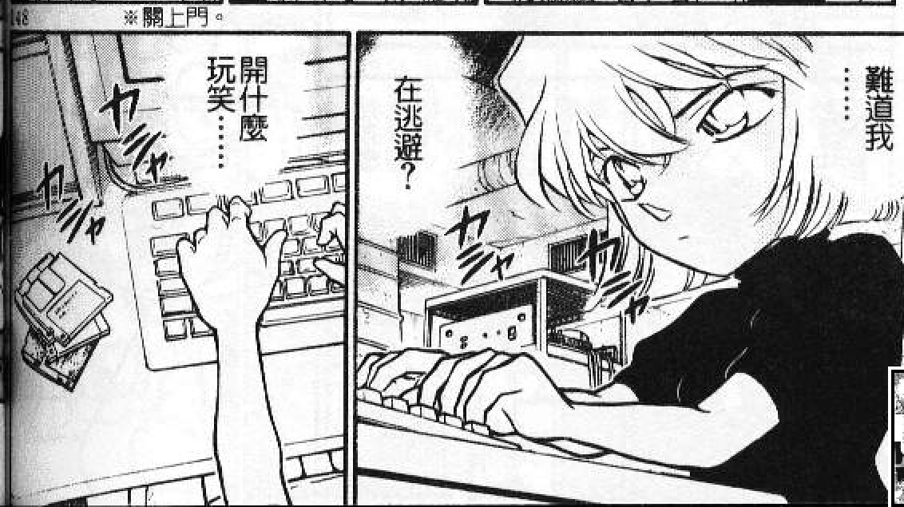
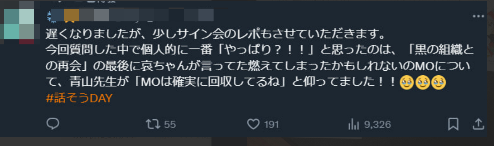
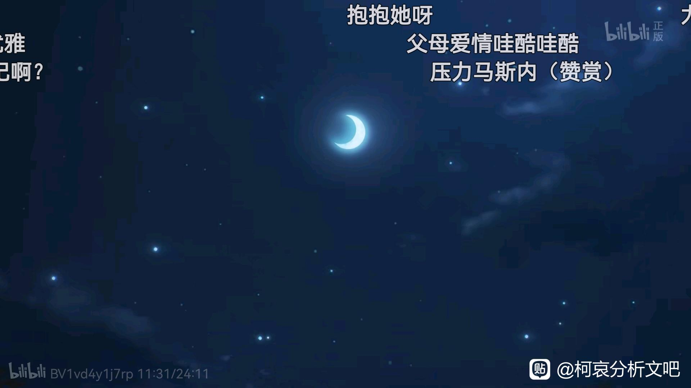
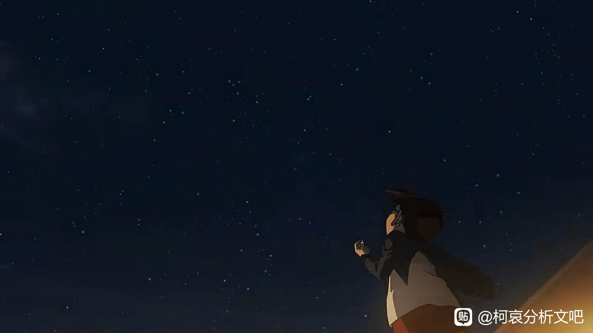
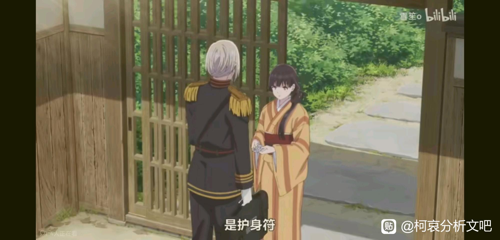
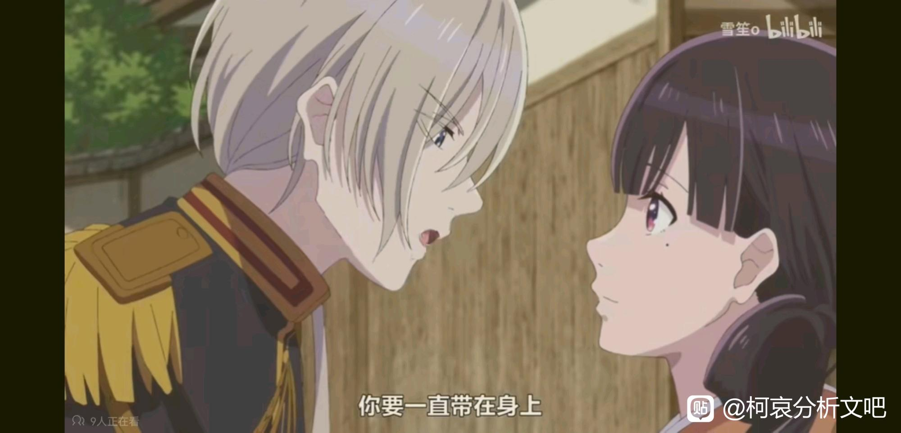

2024青山簽繪＋對話日
X上有人分享
今天最震驚非常開心又覺得果真如此的回答是：「黑衣組織的再會」中，雖然小哀說藥的資料可能被燒掉了，但青山回答「MO確實回收了哦」
X上有人分享
今天最震驚非常開心又覺得果真如此的回答是：「黑衣組織的再會」中，雖然小哀說藥的資料可能被燒掉了，但青山回答「MO確實回收了哦」



因為是重大情報所以獨立開一帖vol24 與黑衣組織的再會
vol25 mll去博士家借浴室，小哀悶不吭聲內心話難道自己在逃避
vol26 危命的復活
其他翻翻X上的問答翻譯：
「若狹老師的傘被擊中時，小哀似乎看向了車子那邊，請問有什麼含意嗎？」
「有的，但現在沒辦法說答案哦！」
「今後還會有小哀變回宮野志保的事件嗎？」
「嗯～或許會有吧（笑）」
「在黑鐵的魚影中，讓芙紗繪的胸針登場是誰的想法呢？」
「是我的想法喔。芙紗繪的胸針因為被讓出來（給苦艾酒），所以覺得小哀對自己有恩，就幫助了她」
「琴酒的台詞都是老師自己想的嗎？」
「對，全部都是我想的。包含『廢物系統（KUSO SYSTEM）』這種講話方式，連我自己也嚇了一跳呢」
「未來會有宮野家的故事嗎？」
「可能會有吧這個不能說」
「灰原小哀的生日已經決定了嗎？」
「生日～嗎？還沒決定呢。如果有的話（就會決定了）。」
「往天國的倒數計時中，為什麼小哀在倒數的地方就換成了由青野（厚司）老師作畫？」
「欸？我不知道耶。那邊的工作安排吧。青野老師很會畫呢～」
「為什麼海猿島事件，波本沒有登場呢？」
「當時這樣忙黑鐵的魚影的工作，覺得很麻煩（笑）就沒讓他登場了。畢竟黑鐵的魚影裡很活躍嘛（笑）」
「在工藤宅邸的茶會具體內容，何時預定會畫呢？」
「雖然有但還很之後的事情」
「柯南以外喜歡的動畫和聲優是？」
「SPYxFAMILY。我喜歡安妮亞。」
「咖啡廳的小梓的故鄉在？」
「欸？（笑）在哪裡呢？東京吧，好像也沒說過鄉下的事情。嗯，就是東京」
「之後還會有小哀主場的劇場版嗎？」
「嗯～會考慮的（笑）」
日本太太表示跟小哀有關的題目幾乎都被「沒辦法回答捏」給帶過去了
另外青山在活動中頭上還戴著m26的徽章喔
「若狹老師的傘被擊中時，小哀似乎看向了車子那邊，請問有什麼含意嗎？」
「有的，但現在沒辦法說答案哦！」
「今後還會有小哀變回宮野志保的事件嗎？」
「嗯～或許會有吧（笑）」
「在黑鐵的魚影中，讓芙紗繪的胸針登場是誰的想法呢？」
「是我的想法喔。芙紗繪的胸針因為被讓出來（給苦艾酒），所以覺得小哀對自己有恩，就幫助了她」
「琴酒的台詞都是老師自己想的嗎？」
「對，全部都是我想的。包含『廢物系統（KUSO SYSTEM）』這種講話方式，連我自己也嚇了一跳呢」
「未來會有宮野家的故事嗎？」
「可能會有吧這個不能說」
「灰原小哀的生日已經決定了嗎？」
「生日～嗎？還沒決定呢。如果有的話（就會決定了）。」
「往天國的倒數計時中，為什麼小哀在倒數的地方就換成了由青野（厚司）老師作畫？」
「欸？我不知道耶。那邊的工作安排吧。青野老師很會畫呢～」
「為什麼海猿島事件，波本沒有登場呢？」
「當時這樣忙黑鐵的魚影的工作，覺得很麻煩（笑）就沒讓他登場了。畢竟黑鐵的魚影裡很活躍嘛（笑）」
「在工藤宅邸的茶會具體內容，何時預定會畫呢？」
「雖然有但還很之後的事情」
「柯南以外喜歡的動畫和聲優是？」
「SPYxFAMILY。我喜歡安妮亞。」
「咖啡廳的小梓的故鄉在？」
「欸？（笑）在哪裡呢？東京吧，好像也沒說過鄉下的事情。嗯，就是東京」
「之後還會有小哀主場的劇場版嗎？」
「嗯～會考慮的（笑）」
日本太太表示跟小哀有關的題目幾乎都被「沒辦法回答捏」給帶過去了
另外青山在活動中頭上還戴著m26的徽章喔
2024-01-04 04:34 | 贴吧用户_Q4eCR5W:未来会不会有宫野家的故事这个不能透露的回答不就是实锤有了嘛...2024-01-04 14:20 | 林深现时鹿🌿:《会考虑的》刚圣再带大伙冲一次吧2024-01-05 12:37 | 我知天才:安室透在剧场版有活跃表现有笑到2024-01-06 00:02 | NCC74656Voyage:回复 贴吧用户_Q4eCR5W :这都不用问，没有的话还怎么推主线2024-01-06 00:30 | 贴吧用户_Q4eCR5W:回复 NCC74656Voyage :所以这逼问题就弱智，宫野家一堆坑你说他填不填，这不是明摆着问死小会不会烂尾2024-01-07 02:51 | 我叫唐雨浩:草工藤宅茶话会这个伏笔真的要拖到决战啊2024-01-21 12:23 | leo0810:青山还喜欢间谍过家家2024-01-21 23:19 | 1412704013B:回复 林深现时鹿🌿 :再冲恐就大结局2024-02-07 23:37 | 逍遥◆第一染:回复 林深现时鹿🌿 :安室透都两三部了，灰原多来一部怎么了

 海猿岛确认在m26后了；mo回收也锤了；红茶会我哭死，还要好久以后……那先期待下哀哀和若狭的故事吧，好奇第三颗银弹要怎么继续展开
海猿岛确认在m26后了；mo回收也锤了；红茶会我哭死，还要好久以后……那先期待下哀哀和若狭的故事吧，好奇第三颗银弹要怎么继续展开2024-01-04 02:31 | Yao_CPT:我也想看小哀跟若狹的後續啊～～2024-01-04 11:12 | 么么小芹菜:回复 Yao_CPT :我也很期待
这下还有谁能说做出解药全是白干的功劳
2024-01-04 02:31 | Yao_CPT:2024-01-04 02:34 | 贴吧用户_G7QD9XD:肯定是都有功勞的，但有藥物資料，哀的籌碼跟心境就大為不同了
要真是靠一瓶白干的有效成份就能把解药做出来，那志保就不是黑组里的红人而是全世界都要抢的爱因斯坦级的科学家了（2024-01-13 12:42 | 贴吧用户_082Ua3A:回复 贴吧用户_G7QD9XD :其实半年不到能做出半成品解药就已经很🐮了，正常制药没个几年哪做得出来，还是这种没什么条件的地方
以邏輯來說MO一定要被回收，不然小哀怎麼做解藥，我認為MO是柯南從杯戶飯店拿出來的
2024-01-04 02:19 | Yao_CPT:2024-01-04 02:36 | 贴吧用户_G7QD9XD:柯南應該不知道MO還存在，小哀偷偷藏的不告訴他。不過他知不知道也不影響發展，因為終究還是得先讓組織瓦解
反正肯定不是离开的时候拿的，可以看出外壳有部分烧焦了2024-01-04 03:10 | Yao_CPT:回复 贴吧用户_G7QD9XD : https://tieba.baidu.com/p/8535973546 這裡有科普可以參考看看2024-01-04 14:17 | 缕陈好:回复 Yao_CPT : 柯南知道的，再会篇回来的车上灰原说了mo放在工作服里面2024-01-13 12:44 | 贴吧用户_082Ua3A:回复 缕陈好 :但后面说了那件衣服被留在那了，应该是瞒着柯南了2024-01-14 02:39 | 缕陈好:回复 贴吧用户_082Ua3A :留在那不是正好，柯南和博士回现场拿了眼镜2024-01-14 02:44 | 贴吧用户_082Ua3A:回复 缕陈好 :怎么可能拿的回来，这磁盘能抗多少度你自己想想，火又多少度，这玩意应该是藏在烟囱里了2024-01-14 02:48 | 缕陈好:回复 贴吧用户_082Ua3A : 那眼镜又能抗多少度？叙事都明明白白的告诉你了就别在那钻牛角尖。眼镜和mo都留在那了，眼镜被拿回来了，说明柯南回到现场，一起拿回mo合情合理，符合一切叙事逻辑安排。非要想那么复杂自己在那加戏？2024-01-14 02:52 | Yao_CPT:回复 缕陈好 :我的看法是兩個當下都拿回來了。哀應該是瞞著柯，看後續劇情需要什麼安排吧，柯如果知道哀有全部的藥物資料應該不會那麼淡定2024-01-14 03:13 | 贴吧用户_082Ua3A:回复 缕陈好 :柯南要真知道拿回来了，当时就急着让哀做解药了，而不是危命篇时那么震惊2024-01-15 00:38 | 缕陈好:回复 Yao_CPT : 请问何处说了“全部药物资料”？明明原话是“相关资料”，全部资料根本就是个猜想2024-01-15 00:41 | 缕陈好:回复 贴吧用户_082Ua3A : 又开始用假设人物的行为去反推，别脑补了2024-01-15 00:45 | 缕陈好:回复 贴吧用户_082Ua3A : 再会篇的时候根本没有剧中人物对灰原的科研能力有实际认识，就算先假设mo里有“全部资料”（实际上根本没有），无论是柯南还是博士都不会指望灰原能快速制成解药，何来“急着”这种态度？2024-02-07 23:50 | 林中的熊宝宝🐨:回复 贴吧用户_082Ua3A :哥，你是不是把柯南当成角姐了，什么事都只想到自己，着急让哀做解药太符合角姐人设了，但不好意思柯南没有这么无耻噢2024-02-08 00:55 | 贴吧用户_082Ua3A:回复 林中的熊宝宝🐨 :那个时候的柯南就是这么急啊，要不然他这么莽干嘛2024-02-08 00:55 | 贴吧用户_082Ua3A:回复 林中的熊宝宝🐨 :现在柯南对变回去的欲望越来越低了而已2024-02-08 02:02 | 林中的熊宝宝🐨:回复 贴吧用户_082Ua3A :你搞错了，莽很大一部分原因是想搞清楚组织的秘密，而不是光想着变回去，云霄飞车新一冲过去偷看秘密交易莽不莽？不是什么着急要解药的问题2024-02-08 02:07 | 贴吧用户_082Ua3A:回复 林中的熊宝宝🐨 :但后面危命篇也能看出来啊，他就是急着要药，但他也不会强求就是了，你可能误会我说的了，我说的急着要药就像是他平时找哀拿药那种态度，而不是他强行逼着哀怎么样怎么样2024-02-08 03:07 | 林中的熊宝宝🐨:回复 贴吧用户_082Ua3A :柯南回收mo很正常，有药物资料就能开发出解药？有资料开发出解药一样很震惊啊，根本不需要在没有资料的情况下研制出解药才感到震惊2024-02-08 03:08 | 林中的熊宝宝🐨:回复 贴吧用户_082Ua3A :是药物的资料又不是解药的资料
好家伙，mo这种远古的设计，73真得不打算把它换掉吗
总觉得73又要在间谍过家家里寻找灵感了，什么黄昏*约尔剧情
总觉得73又要在间谍过家家里寻找灵感了，什么黄昏*约尔剧情
2024-01-04 02:28 | Yao_CPT:連我的年代都只知道3.5磁片了～～SPYxFAMILY輕鬆看挺有趣的我也愛看2024-01-04 02:30 | 撩妹有糖吃😘:2024-01-04 11:01 | 1412704013B:劳约爱情也有猎户座望天哈哈，看到的时候幻视m26了
回复 Yao_CPT :還有5.1
日本太太表示跟小哀有關的題目幾乎都被「沒辦法回答捏」給帶過去了
果然涉及主线的是全打马虎眼啊
果然涉及主线的是全打马虎眼啊
2024-01-04 02:25 | 沐◎瑾:果然，不能打哈哈瞎说的问题就都一律不回答2024-01-04 02:31 | Yao_CPT:2024-01-04 07:42 | 江湖骗子👧:也可能是小刚刚没想好2024-01-04 08:09 | 开始💨吧:回复 江湖骗子👧 :来文吧找找灵感2024-01-04 14:22 | 林深现时鹿🌿:证明对哀的塑造很重视
谁能想到二十年前的列文虎克如今被实锤
2024-01-04 02:32 | Yao_CPT:青山：你們要好好仔細看漫畫啊我都畫出來了2024-01-21 23:21 | 1412704013B:（設計對白）
回复 Yao_CPT :正是2024-01-21 23:24 | 1412704013B:回复 Yao_CPT :不過老實說現在各地各路的神仙人馬開始瘋狂地毯式扒漫畫，總算也是功夫不負有心人，青山終於把讀者們引回了他三十年前的目的上，順便還把作品熱度重新炒作回高點，可謂是一舉兩得ㄏㄡ2024-01-21 23:26 | 1412704013B:回复 Yao_CPT :大家如此這般的後知後覺甚至是佛系看漫畫，只怕也是令他始料不及（笑）
但是这里面也没有全部资料，只有一部分，所以小哀也只能做出临时的解药
2024-01-04 02:29 | Yao_CPT:罰你去重看與黑衣組織的再會！！！2024-01-04 02:37 | airxk:回复 Yao_CPT :当时有说过是所有资料吗？那个年代那个设备居然能拷得出来这么多东西也太不科学了2024-01-04 02:37 | 咿哈来啦:回复 Yao_CPT :我估计才层主的意思是这个毕竟被烧了，资料有残缺吧，不然做的出完全解药是很有机会吧2024-01-04 02:39 | 咿哈来啦:回复 airxk :其实这倒没什么，因为那个年代文件本身也不可能太大，按照老贼一开始的设定，哀初登场时去那个教授家里要回收的磁盘也就只有一片而已。2024-01-04 03:07 | Yao_CPT:回复 咿哈来啦 :這倒是沒說細節，不過要嘛被燒光，要嘛完整，我傾向應該是完整的資料 這裡有科普：https://tieba.baidu.com/p/85359735462024-01-04 05:59 | 诗墨羽🌀:即使有完整资料，做出来解药也不是说说啊2024-01-04 06:00 | 诗墨羽🌀:解药是要逆转已知药物的药性，比重新开发药更难，直接被限制2024-01-04 06:41 | Yao_CPT:回复 诗墨羽🌀 :是啊2024-01-04 07:37 | 贴吧用户_GMSD67V:回复 Yao_CPT :其實還有一個，當女性代表自己的時候一般用自己的姓氏，比如靜華初登場，英理，和去年的家長會的女明星滕峰有希子（文代是滕峰有希子飾）但他們被叫做xx的媽媽的時候代表的就是夫家。比如新一的媽媽，暗夜男爵夫人，一般這麽叫的時候代表的就是工藤家。
吧里有人分析过了
2024-01-04 03:04 | Yao_CPT:對的，那篇寫的很棒，重點就是73證實這件事
http://tieba.baidu.com/p/8535973546?&share=9105&fr=sharewise&is_video=false&unique=1CB2DCB8C56CD316E52610CDDD5BB4B2&st=1704353096&client_type=1&client_version=12.36.1.0&sfc=copy&share_from=post&source=12_16_sharecard_a
2024-01-04 03:08 | Yao_CPT:https://tieba.baidu.com/p/8535973546 幫補連結
只能说过了这么多年总算给本人亲口再承认了……原本在漫画里留的细节其实很明显了
2024-01-04 03:09 | Yao_CPT:2024-01-06 00:11 | NCC74656Voyage:他也是一直到去年才承認灰原哀喜歡柯南呢
回复 Yao_CPT :嘴上去年才说吧？至少M19就已经点明了
小哀用身体试药青山都不明牌吗
2024-01-04 02:52 | 开始💨吧:留着当炸用2024-01-04 03:10 | Yao_CPT:這我認為應該是不會明牌啦，除非有什麼劇情能顯示他倆抗藥性差不多2024-01-04 11:16 | 么么小芹菜:回复 Yao_CPT :感觉不需要，肯定是试过药的，通过成分来准确判断变小时间太柯学了2024-01-05 09:47 | 小丁焦糖布丁🌱:你开局就王炸2024-01-05 23:33 | 阎罗王2988:73精着呢
试药论几乎板上钉钉，一旦拿出来又该炸裂2024-01-05 23:35 | Yao_CPT:回复 阎罗王2988 :柯哀現在不走苦情戲，試藥論拿出來意義不大2024-01-05 23:48 | Yao_CPT:另外一種解釋也能說成，既然哀已經拿到完整的藥物資料，那重現APTX4869後餵給小白鼠吃，得到小隻的再進行實驗也不是不可能，但博士有沒有買這麼多小白鼠給哀實驗就不得而知了2024-01-06 00:56 | 诩不诩:回复 Yao_CPT :这个确实很赞同，不走苦情现在拿出来意义不大
这只能说他确实知道在画什么，也一直没忘自己画了什么
2024-01-04 04:57 | Yao_CPT:希望青山記憶力或筆記能繼續維持
艹，前两天还想着，远藤老师会不会把间谍过家家当成长篇连载的柯南来画。时刻提醒你有一个主线但就是不急着推，然后画画日常。每年再出一个剧场版这种感觉。结果刚圣就说自己最近比较喜欢SxF
2024-01-04 04:45 | Yao_CPT:我個人覺得SPYxFAMILY的主線挺無聊的，繼續永遠日常下去挺好的2024-01-04 06:00 | airxk:不太一样，柯南的热点在主线上，而间谍本来就是日常比较好看2024-01-04 06:39 | Yao_CPT:回复 airxk :一家子日常很溫馨2024-01-04 21:42 | 孙蜀相:回复 Yao_CPT :我是对主线挺感兴趣（其实就是男女主的身份梗怎么戳破以及戳破后怎么收场），但我觉得不着急，直到现在SxF连100话都不到。这种轻松合家欢的氛围倒还真的不错2024-01-04 21:54 | Yao_CPT:回复 孙蜀相 :哈哈我認知的主線是指爸爸要接近次子爸爸獲取情報這件事，很無聊，不過安妮亞接近次子那邊好笑又可愛。至於戳破身份我是圈在爸媽感情線裡，但這條幾乎沒有打算要進展所以我沒把它當主線2024-01-13 12:51 | 贴吧用户_082Ua3A:要演到那邊恐怕也得結局了不過這部比名柯不需要結局，可以當多啦A夢看了
回复 Yao_CPT :多画点父母日常，约尔黄昏不是真夫妻却比大多数真夫妻甜多了
spy family也有猎户座，会不会是从这儿来的哈哈，去年的番感觉好多能get到m26，日漫常用梗了




2024-01-05 07:44 | love最爱zero:求问最后这漫叫什么啊2024-01-05 11:28 | _苏一只_:回复 love最爱zero :我的幸福婚约。大烂片不要看！连爱看古早玛丽苏的我都受不了的烂片…2024-01-05 18:42 | 撩妹有糖吃😘:回复 _苏一只_ :2024-01-06 08:20 | love最爱zero:回复 love最爱zero :纳尼！！白瞎这么好画风了！！
这个一回收，不知道会不会填灰原真正想做的药物
连这些都会回收，双鲨论我不信是偶然而且还有最新的时间胶囊里又开始挖新坑
而且还有最新的时间胶囊里又开始挖新坑2024-01-04 12:14 | Hakuno♬:双鲨论比mo明显好几倍吧，就是故意这么画的，我更希望真的有初遇论2024-01-04 12:19 | 眼镜王蛇💯:回复 Hakuno♬ :初遇论要是真的，那么柯哀几乎是稳赢了2024-01-04 14:24 | 林深现时鹿🌿:回复 眼镜王蛇💯 :天将青梅 太夸张了2024-01-04 20:14 | 眼镜王蛇💯:回复 林深现时鹿🌿 :套用一个up的话：天降养成系青梅哈哈哈2024-01-05 02:05 | Hakuno♬:回复 眼镜王蛇💯 :天降青梅，比真正的青梅竹马更白月光，直接杀死比赛，

我估计，把文吧的观点全丢给青山，他一定会非常震惊居然有人可以了解他作品到这种程度，包括1/2顶点那一案。
2024-01-04 04:46 | Yao_CPT:2024-01-06 01:00 | 诩不诩:求问1/2顶点是哪个案子的别称哇，想了半天没想起来2024-01-06 07:32 | 李洪恺666:回复 枫月1990 :同问2024-01-06 09:38 | 枫月1990:回复 诩不诩 :漫画家失踪的案件，应该在漫画183话2024-01-06 09:38 | 枫月1990:回复 李洪恺666 :漫画家失踪的案件，应该在漫画183话2024-01-06 09:39 | 李洪恺666:回复 枫月1990 :多谢
不过为什么隔了这么多年突然被人提到，且青山居然这么直接毫不含糊地回答？好奇怪🤔️
2024-01-04 05:11 | 贴吧用户_QA9a7RQ:会不会放到明面上来2024-01-04 07:35 | __灰原那傢伙:回复 贴吧用户_QA9a7RQ ::总感觉这样直接回答了就像也在提醒大家不要忘记这件事一样，方便为他放到明面上做准备2024-01-04 11:34 | 三三喝菠萝水☔:因为他已经提到a药或者临时解药的副作用是生长停止吧2024-01-04 20:23 | __灰原那傢伙:回复 三三喝菠萝水☔ :有道理
希望接下来其他的伏笔也能陆续回收
之前b站刷到一个视频，说是曾经海猫呜泣之时的内地玩家直接在贴吧分析出了结局和碑文，说不定柯哀分析文吧的大佬们也已经破解了，等青山解密！你说以后会不会有粉丝寄信给青山，信的内容是打包的精华分析贴，让青山来点小小的震撼
2024-01-04 07:37 | __灰原那傢伙:别啊，好像说青山不喜欢这样，在网上看到别人猜出来了他还没画到的情节的话他就会改掉2024-01-04 11:08 | 三三喝菠萝水☔:龙骑士就是因为这样破防了2024-01-04 14:22 | 缕陈好:回复 __灰原那傢伙 : 恰恰相反，青山和尾田访谈里说了“既然被大家猜到了，那就画出来吧”2024-01-04 18:12 | 山田储金:回复 缕陈好 :说是说，做是做，他偷偷改了读者也不会知道2024-01-04 19:34 | 缕陈好:回复 山田储金 : 我只是说青山没说过“不喜欢这样”，你非要说他说是说做是做，那咱谁都不是青山，都是猜你说是吧2024-01-04 20:50 | Yao_CPT:回复 __灰原那傢伙 :青山沒這樣說過，這本來就是推理漫畫，邏輯正確就會把答案畫出來2024-01-05 18:16 | 贴吧用户_GVAMJ87:回复 __灰原那傢伙 :73应该是支持这样的，不支持至少也不讨厌，那个小说作家案最后就说过很期待读者说在他公布答案之前自己就知道答案了，如果反感这种行为的话他根本就不会画这个情节2024-01-06 01:05 | 诩不诩:回复 __灰原那傢伙 :！！，我也记得看过这个说法，内个采访的视频里有说猜到了可能会改掉。 但是我想应该是喜欢大家去猜的，我觉得不影响大伏笔的内容大家猜到了画出来完全没问题，估计73还是想藏一手，搞点反转惊喜啥的。2024-01-06 04:31 | Yao_CPT:回复 诩不诩 :哪個採訪影片有連結嗎？2024-01-07 01:46 | 诩不诩:回复 Yao_CPT :抱歉，好久之前刷到的了，没有保存，历史记录我也没翻到2024-01-07 01:47 | 诩不诩:回复 Yao_CPT :简单说一下我的理解，那句话确实有猜到了可能会改的意思，但我感觉更多针对的是特别关键的剧情或者谁是凶手这种小点，要是全让大家猜完了作为作者会没有成就感，（又要但是了）我觉得他还是希望大家去猜的，享受“啊竟让是这样”的内种感觉。
再次证明咱们不是过度解读。
虽然这么多年我们都默认那张MO是被回收了，但是他2014年对话日说“这个不能说”，2018年对话日说（因为技术进步）“能不能忘了呢”，现在终于直接承认了
感觉就像，我们都知道哀喜欢柯南，但是他直到2023年才公开承认这一点一样
感觉就像，我们都知道哀喜欢柯南，但是他直到2023年才公开承认这一点一样
2024-01-04 06:52 | Yao_CPT:膜拜大佬 是的2024-01-04 07:38 | __灰原那傢伙:就算是正確答案也會被他呼攏好幾年，艾琳名字也是這樣啊～～
会不会是马上要在漫画回收了 所以才大方承认呢？2024-01-04 11:04 | 小杰奇犽999:老贼是真能憋啊2024-01-06 04:53 | 叶利钦的腰带:看得出来吗（笑） 那两人的恋爱喜剧2024-02-02 05:57 | 即将02的废物月:回复 叶利钦的腰带 :我不是画的很明显吗（笑）
刚子喜欢阿尼亚，所以让阿尼亚当志保闺蜜是吧
2024-01-04 06:50 | Yao_CPT:種崎是立川導演直接邀請的
老贼伏笔清算一个都跑不了，是一开始就安排好的。 
 贝姐还真因为胸针帮灰原啊，我之前还以为胸针最多只占1%，剩下99%都是boss和自己想保守a药秘密，这下干妈真生锈了
贝姐还真因为胸针帮灰原啊，我之前还以为胸针最多只占1%，剩下99%都是boss和自己想保守a药秘密，这下干妈真生锈了2024-01-04 20:51 | Yao_CPT:2024-01-05 05:47 | 九九玉生烟:要原因真是那么简单，你猜73为什么最后彩蛋部分要让贝姐问柯南？难不成是，银色子弹，你说我为什么要帮雪莉呢？因为芙莎绘的胸针？2024-01-05 05:59 | 世界上没有真理:回复 九九玉生烟 :對啊!區區一個胸針還要銀色子彈來思考?那回答就是青山的煙霧彈罷了!我甚至懷疑柯哀以後的劇情貝姐可能也是破局人2024-01-05 07:22 | 贴吧用户_5EPSKyJ:我觉得肯定是跟主线和boss有关系的2024-01-05 07:30 | 獨孤尋歡:胸针算是临时激发的作用，列车篇以后有一部分原因小哀对于贝姐就是柯南对于琴酒，是会破坏自己地位的存在，为了自己的地位也不能让人知道他们活着加上有希子说的自己人2024-01-15 00:54 | 影TF:回复 多啦已阵亡 :倒也未必不是，剧场版给一个说的过去的表理由让路人即使对主线不熟悉也能理解吧
海贼王的贴吧不也是分析了好多东西，后来尾田都真的画出来了，所以说有些人讽刺分析文吧YY的直接让他们回忆回忆
73内心os ：怎么这么多小哀的问题，女主身上刻意放这么多疑点，你们就这样问出来，是让我剧透嘛？太极！全部都太极！麻烦下一届问点能说的
因为哀酱有关系的问题，只能随着剧情推进，一点点的回答，而毛利兰的问题，现在除了初恋是谁，你们随便问，究竟谁更重要，一目了然
好耶
青山好戏啊

间谍过家家刚更新了，福杰一家的暴风雪山庄侦探之旅。我只能说很难不认为是远藤看了青山的推。
2024-01-21 21:06 | Yao_CPT:公車挾持事件也蠻有那個味的